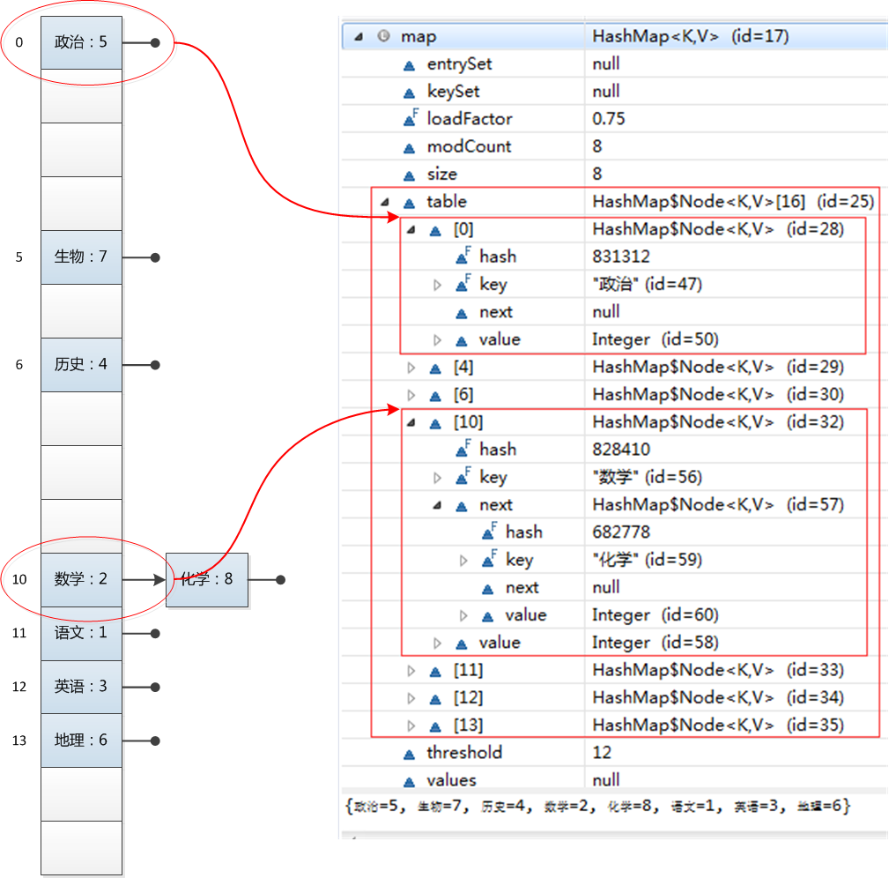

Map简介
map是一种映射的数据结构，以key-value键值对的形式存储，java中自带了有多种map的实现，也提供了一个用于帮助我们实现自己的Map的抽象类AbstractMap
java Map实现之HashMap
java中HashMap是我们日常开发中最常使用的map，HashMap（ jdk1.8以后）底层是基于数组（hash散列）+ 链表 + 红黑树来实现的。 HashMap的优势是可以很快的根据键（key）找到对应的值（value）,HashMap存储的时候是无序的,通过put进来的元素key的hashCode计算该元素在数组上的索引，把元素放到上面去，用链表和红黑树来解决hash碰撞的问题。
HashMap put函数的实现
下面是我们hashMap中put元素时的操作：
HashMap<String,Integer> map = new HashMap<>();
map.put("语文", 1);
map.put("数学", 2);
map.put("英语", 3);
map.put("历史", 4);
map.put("政治", 5);
map.put("地理", 6);
map.put("生物", 7);
map.put("化学", 8);
for (Map.Entry<String,Integer> entry : map.entrySet()) {
System.out.println(entry.getKey() + "-->"+entry.getValue());
}
}运行结果：
政治-->5
生物-->7
历史-->4
数学-->2
化学-->8
语文-->1
英语-->3
地理-->6看一下hashMap内部的数组元素的分布情况：

上图可以清楚的显示出hashMap添加新元素时的bucket位置不是按照添加顺序的，而是通过计算，hash碰撞时会在当前bucket位置产生一个链表存储。
1、HashMap中几个比较重要的成员变量和参数
- initialCapacity（参数）:initialCapacity初始化map的buckets的数量，默认的情况下是16个。
- loadFactor:loadFactor负载因子默认为0.75f,reSize的条件当前的hashMap的元素的个数大于loadFactor*capacity会将原来的map扩容至原来的2倍。
- table:用来装hashMap中的元素。
- size:当前hashMap所有元素的个数。
2、put函数的大致流程:
1、根据key的hashCode()做hash计算如果没发生碰撞直接将元素插入到计算的bucket上
2、如果发生了碰撞和判断当前位置的key做equals如果相等则更新该节点的值
3、如果发生碰撞但是key并不相等则在该节点需要以链表的形式存储
4、当链表的长度大于等于8(TREEIFY_THRESHOLD)链表转为红黑树
5、判断当前hashMap的元素个数是否大于（loadFactor*capacity），如果大于进行reSize
代码如下：
final V putVal(int hash, K key, V value, boolean onlyIfAbsent,
boolean evict) {
Node<K,V>[] tab; Node<K,V> p; int n, i;
if ((tab = table) == null || (n = tab.length) == 0) // tab为空则创建
n = (tab = resize()).length;
if ((p = tab[i = (n - 1) & hash]) == null) // 计算index，并对null做处理
tab[i] = newNode(hash, key, value, null);
else {
Node<K,V> e; K k;
if (p.hash == hash &&
((k = p.key) == key || (key != null && key.equals(k)))) //判断节点是否存在相同的key
e = p;
else if (p instanceof TreeNode) // 该链为树
e = ((TreeNode<K,V>)p).putTreeVal(this, tab, hash, key, value);
else {
for (int binCount = 0; ; ++binCount) {
if ((e = p.next) == null) {
p.next = newNode(hash, key, value, null);
if (binCount >= TREEIFY_THRESHOLD - 1) // -1 for 1st //链转数
treeifyBin(tab, hash);
break;
}
if (e.hash == hash &&
((k = e.key) == key || (key != null && key.equals(k))))
break;
p = e;
}
}
//节点存在相同的节点，值替换
if (e != null) { // existing mapping for key
V oldValue = e.value;
if (!onlyIfAbsent || oldValue == null)
e.value = value;
afterNodeAccess(e);
return oldValue;
}
}
++modCount;
//进行reSize操作
if (++size > threshold)
resize();
afterNodeInsertion(evict);
return null;
}hashMap的get实现
如果理解了put操作get实现就很容易理解了，根据用户传来的key通过hash计算找到对应的索引位置，然后通过equals判断查找对应的key，若为链表查找时间复杂度为O(n)，若为数则时间复杂度为O(logn)。
public V get(Object key) {
Node<K,V> e;
return (e = getNode(hash(key), key)) == null ? null : e.value;
}
final Node<K,V> getNode(int hash, Object key) {
Node<K,V>[] tab; Node<K,V> first, e; int n; K k;
if ((tab = table) != null && (n = tab.length) > 0 &&
(first = tab[(n - 1) & hash]) != null) {
if (first.hash == hash && // always check first node
((k = first.key) == key || (key != null && key.equals(k))))
return first;
if ((e = first.next) != null) {
if (first instanceof TreeNode)
return ((TreeNode<K,V>)first).getTreeNode(hash, key);
do {
if (e.hash == hash &&
((k = e.key) == key || (key != null && key.equals(k))))
return e;
} while ((e = e.next) != null);
}
}
return null;
}hashMap的hash函数的实现
在get和put的过程中，计算下标时，先对hashCode进行hash操作，然后再通过hash值进一步计算下标，如下图所示：
代码具体的逻辑为，根据key计算出的hashCode高16位不变，低16位和高16位做一个异或的运算。代码如下
static final int hash(Object key) {
int h;
return (key == null) ? 0 : (h = key.hashCode()) ^ (h >>> 16);
}因为目前的table长度n为2的幂，而计算下标的时候，是这样实现的(使用&位操作，而非%求余)：
(n - 1) & hash